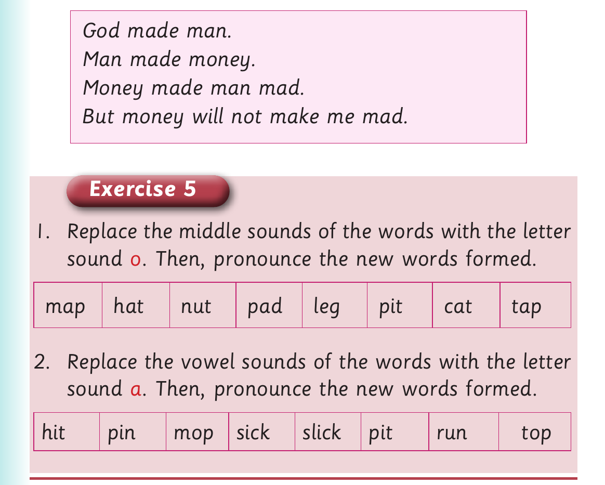

Replacing middle sounds - Activity 3 and Exercise 5
Activity 3
1. Pronounce/sign the following words:
| leg | tap | jog | dig | nut | shop | mud |
|---|
2. Replace the vowel sound of the words in (1). 3. Pronounce/sign the new words you have formed in (2). 4. Read the following tongue twister fast:

Tongue twister: God made man. Man made money. Money made man mad. But money will not make me mad. Exercise 5, table one. Replace the middle sounds with o: map, hat, nut, pad, leg, pit, cat and tap. Table two. Replace the vowel sounds with a: hit, pin, mop, sick, slick, pit, run and top.